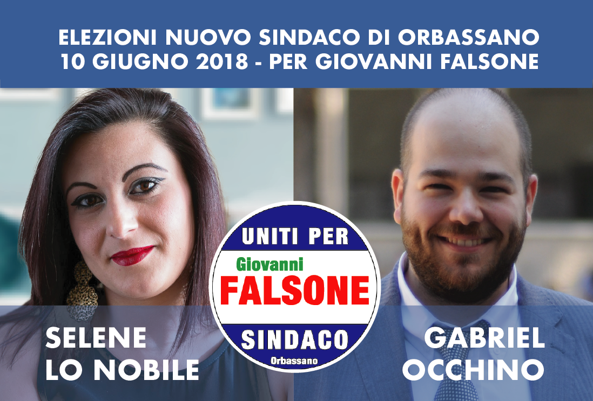
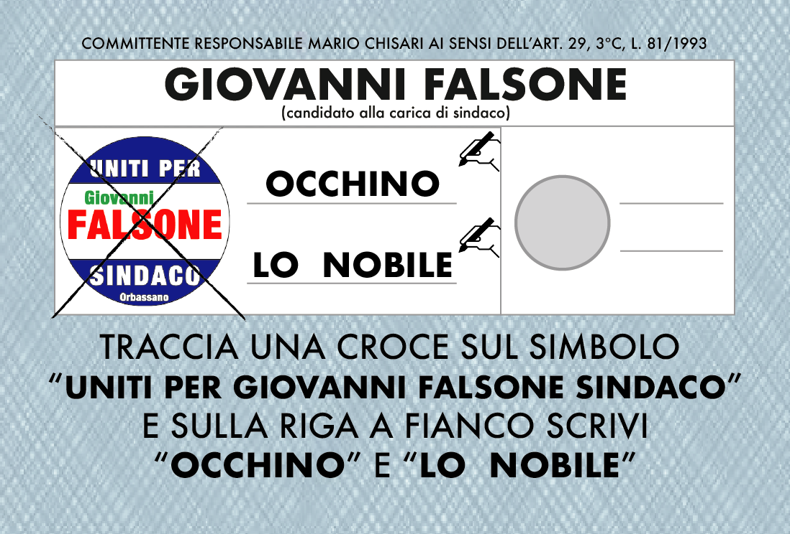
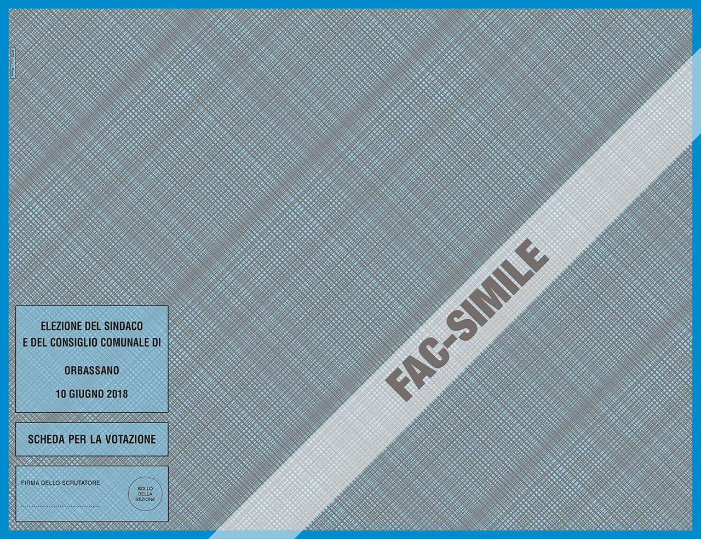
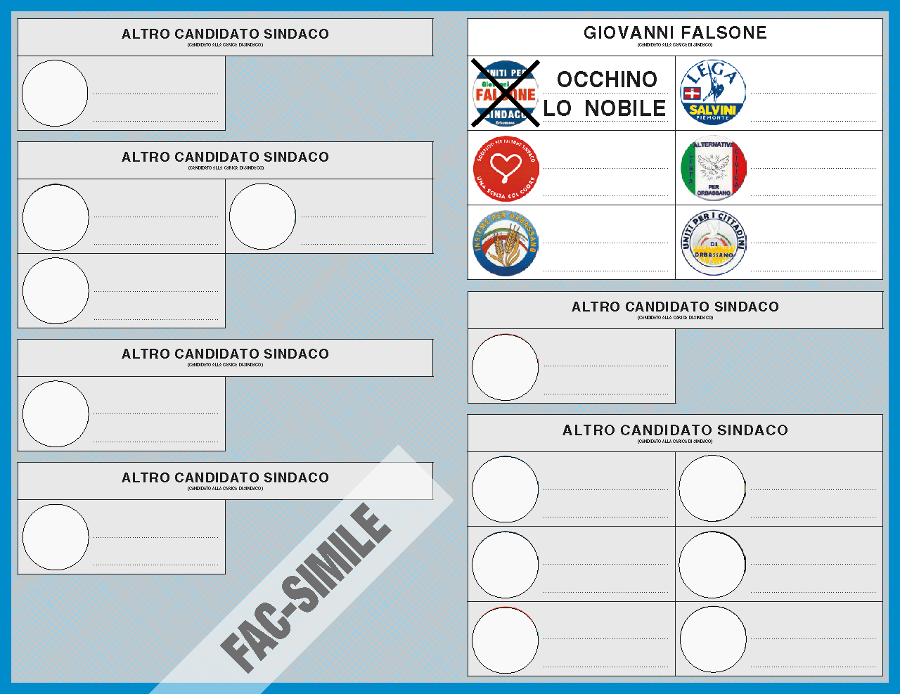

Sono originario di Roccafiorita, un piccolo paesino della zona Ionica della Sicilia. Ho vissuto ad Orbassano per oltre 25 anni, base imprescindibile per tutte le mie attività. Per motivi di lavoro mi sono sempre dovuto spostare, ma questa città è sempre stato un punto di riferimento.
Ho deciso di mettermi in gioco per questa campagna elettorale perchè penso che sia giusto contribuire e dare il mio punto di
vista su un modo di vivere Orbassano diverso da quello di molte altre persone. Vivo e ho vissuto le vicessitudini del pendolare che
macina chilometri per raggiungre il luogo di lavoro; del lavoratore che quando va bene, impiega 40 minuti per fare 15 chilometri.
Per questo motivo uno dei punti di mio maggiore interesse è la viabilità.
Orbassano ha grandi potenzialità e potrebbe diventare un importante centro nevralgico e punto di riferimento per tutto il
circondario, ma ha bisogno di sfruttare meglio i collegamenti esistenti, ma anche crearne di nuovi. Le vie di uscita e di entrata intorno alla città sono costantemente
congestionate, i lavori per creare nuove valvole di sfogo per il traffico sono bloccati e le strade sono perennemente da rifare.
Ad Orbassano è arrivata la fibra: sembra un gentile invito a lavorare da casa se potete, perchè di muoversi non v'è possibilità.
Purtroppo non posso pretendere di conoscere tutti i problemi legati alla viabilità; sarò quindi molto felice di rispondere alle vostre domande e ascoltare le vostre opinioni
qualora voleste contattarmi.
Sicuramente ci sono tanti altri temi da trattare e la mia esperienza lavorativa mi porta a poter discutere di molti argomenti, come bilancio, commercio, attività produttive e altro.
Non voglio tediare nessuno con il mio pensiero; quello che mi preme veramente conoscere è la vostra opionione su questa città così da poter modellare
il mio punto di vista e provare a vivere questa città anche con i vostri occhi.
Invitandovi a leggere anche il discorso di Selene,
vi ringrazio per il tempo che mi avete dedicato
Grazie
sono una cittadina di Orbassano da sempre; sono cresciuta qui; sono andata a scuola qui; ho conosciuto tutti i miei amici qui; da Settembre 2011 ho anche aperto qui, la mia piccola attività. Sono una ragazza solare e dinamica, che cerca sempre di impegnarsi in tutto quello che fa.
Ho deciso di candidarmi per mettermi in gioco e poter fare qualcosa per la mia città. Sono stata membro attivo dell'associazione A.S.COR e ho sempre cercato di fare qualcosa per il commercio di Orbassano. Vorrei fare di più e per questo penso sia giusto che anche io dia il mio contributo alla mia categoria, cercando di far risaltare la voce dei commercianti. Credo che in questo periodo di recessione economica, ci sia bisogno di qualcosa per risollevare l'economia locale. Penso che sia importante:
Mettere in atto tutte le idee da realizzare, così come risolvere tutti i problemi degli Orbassanesi, è un progetto ambizioso, ma per fortuna io sono una persona ambiziosa, ma ancora di più sono convinta che Gabriel ed io ci impegneremo al massimo per ottenere i migliori risultati. Grazie



